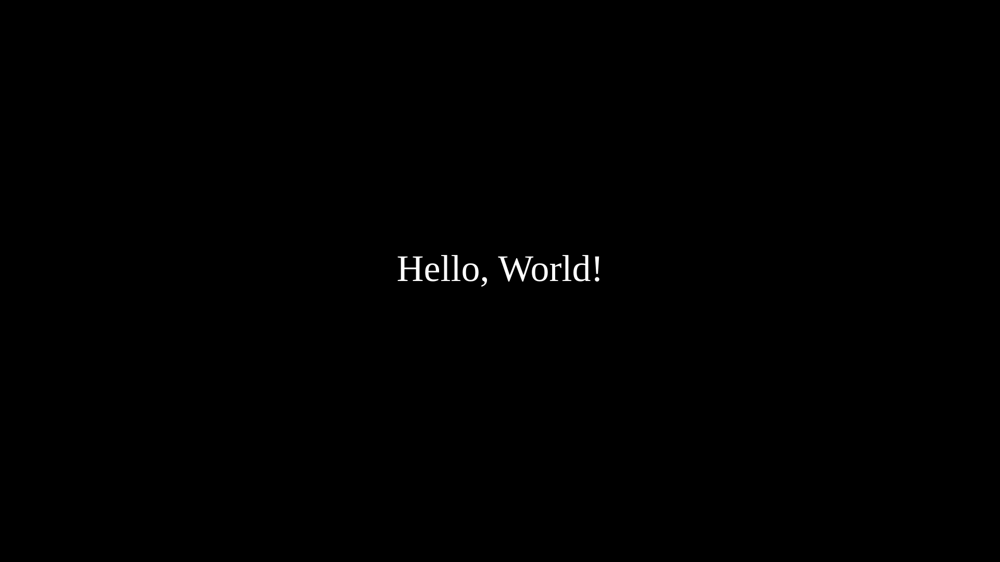
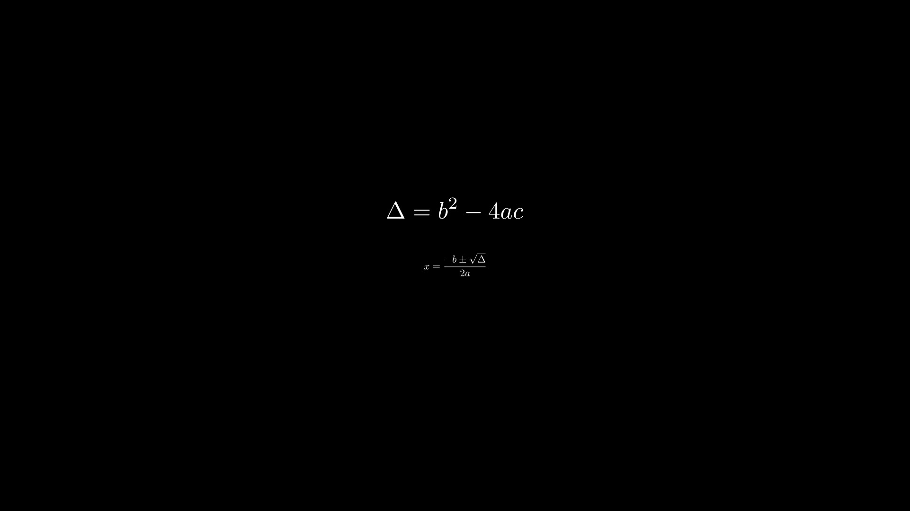
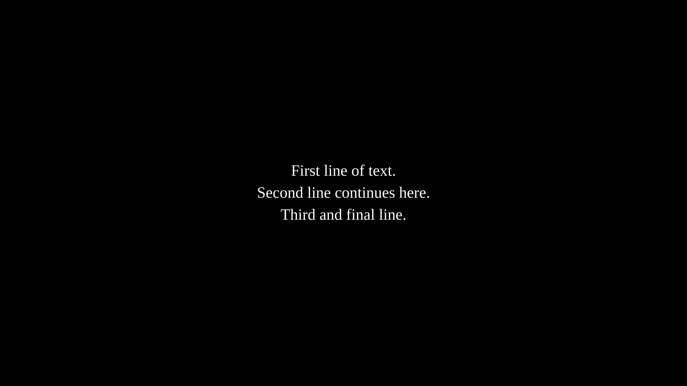
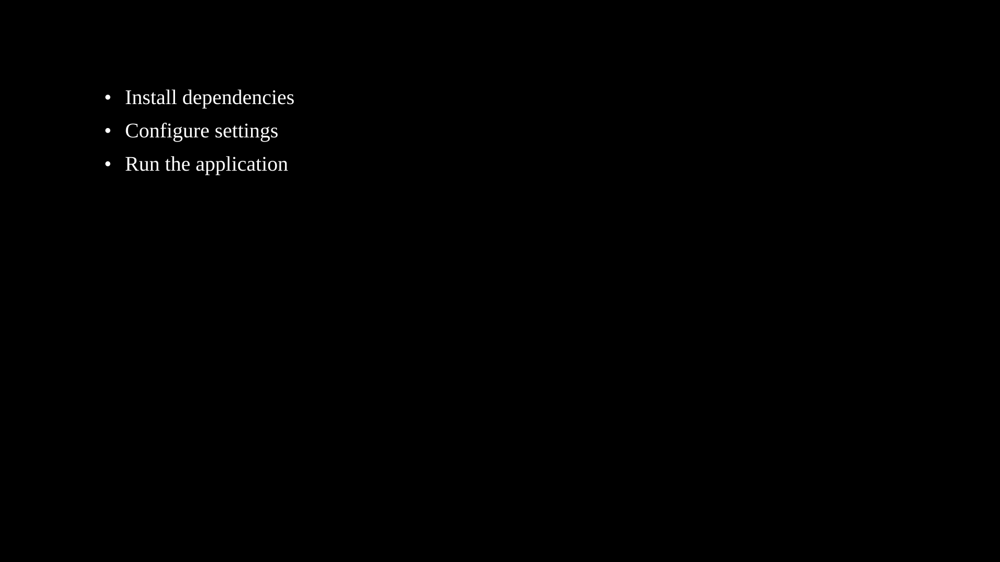
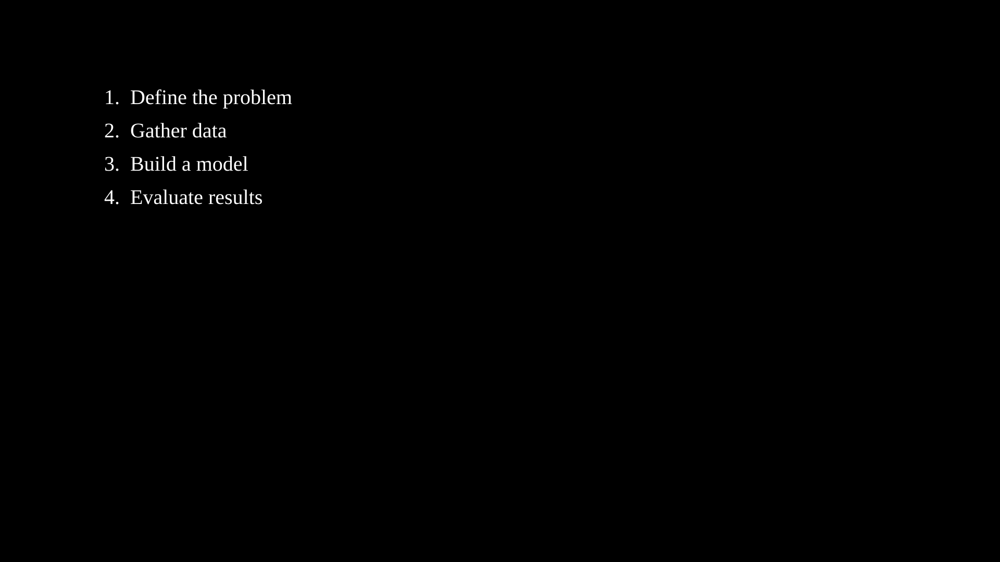

Text & LaTeX¶
All text classes inherit from VObject and share its full set of animation methods (movement, styling, effects, etc.).
Text¶
Text

"""Text shape."""
from vectormation.objects import *
v = VectorMathAnim()
v.set_background()
t = Text('Hello, World!', x=960, y=540, font_size=72,
fill='#fff', stroke_width=0, text_anchor='middle')
v.add(t)
v.show(end=0)
- class Text(text='', x=960, y=540, font_size=48, text_anchor=None, font_family=None, **styling)
Plain SVG
<text>element. Default fill is white (#fff) with no stroke.- Parameters:
text (str) – Text content.
x (float) – X position.
y (float) – Y position (baseline).
font_size (float) – Font size in pixels (default
48).text_anchor (str) – SVG
text-anchor–'start','middle', or'end'.font_family (str) – CSS font family name.
- text: String
Text content (time-varying).
- font_size: Real
Querying
- get_text(time=0)
Return the text string at the given time.
- char_count(time=0)¶
Return the number of characters.
- word_count(time=0)¶
Return the number of whitespace-separated words.
- word_at(index, time=0)¶
Return the word at the given index.
- char_at(index, time=0)¶
Return the character at the given index.
- starts_with(prefix, time=0)
Return
Trueif the text starts with prefix.
- ends_with(suffix, time=0)
Return
Trueif the text ends with suffix.
Styling
- bold(weight='bold')¶
Set the font weight to bold. Returns self for chaining.
- italic(style='italic')¶
Set the font style to italic. Returns self for chaining.
- set_font_family(family, start=0)¶
Set the CSS font family. Returns self.
- set_font_size(size, start=0, end=None, easing=smooth)¶
Animate font size to a new value over
[start, end].
Text Manipulation
- update_text(new_text, start=0)¶
Instantly change the displayed text from start onward (no animation).
- to_upper(time=0)¶
Change the text to uppercase at the given time.
- to_lower(time=0)¶
Change the text to lowercase at the given time.
- reverse_text(time=0)¶
Reverse the text content in-place at the given time.
- truncate(n, ellipsis='...', time=0)¶
Truncate the text to at most n characters, appending ellipsis if trimmed.
- fit_to_box(max_width, max_height=None, time=0)¶
Adjust
font_sizeso the text fits within the given pixel dimensions.
Splitting
- split_words(time=0)¶
Split text into a
VCollectionof individual wordTextobjects, positioned to match the original layout.
- split_chars(time=0)¶
Split text into a
VCollectionof individual characterTextobjects (spaces are excluded).
- split_lines(time=0, line_spacing=1.4)¶
Split multi-line text (containing newline characters) into separate
Textobjects.
- split_into_words(time=0, **kwargs)¶
Like
split_words()but accounts fortext_anchorwhen positioning. Extra keyword arguments are forwarded to each childText.
- wrap(max_width, time=0)¶
Word-wrap the text to fit within max_width pixels. Returns a
VCollectionof lineTextobjects.
Background
- add_background_rectangle(color='#000000', opacity=0.5, padding=10, time=0)¶
Create a semi-transparent
Rectanglebehind the text. Returns aVCollectioncontaining the rectangle and the text.
Text Animations
- typing(start=0, end=1, change_existence=True)
Typewriter effect: reveal characters one by one over
[start, end].- Parameters:
start (float) – Animation start time.
end (float) – Animation end time.
change_existence (bool) – If
True, the object appears at start.
- typewrite(start=0, end=1, cursor='|', change_existence=True)
Reveal text character by character with a blinking cursor. Similar to
typing()but appends a cursor character (e.g.'|') after the revealed portion. The cursor is removed once all characters are shown.- Parameters:
cursor (str) – Cursor character displayed during reveal.
- untype(start=0, end=1, change_existence=True)
Reverse typewriter: remove characters right-to-left over
[start, end]. Text becomes empty at the end. If change_existence isTrue, the object is hidden after completion.
- reveal_by_word(start=0, end=1, change_existence=True, easing=None)
Reveal text word by word over
[start, end]. Words appear in order, separated by spaces.word_by_wordis an alias.- Parameters:
easing – Easing function for word timing (default:
linear).
- scramble(start=0, end=1, charset=None, change_existence=True)
Decode/reveal effect: characters settle left-to-right from random characters to the final text. Un-settled positions cycle through random characters from charset (defaults to alphanumeric + symbols). Uses a deterministic seed for reproducibility.
- Parameters:
charset (str) – Character set for scrambled characters.
Example: Typewrite
Typewriter effect with blinking cursor.
"""Typewriter effect with cursor.""" from vectormation.objects import * v = VectorMathAnim() v.set_background() title = Text('$ pip install vectormation', x=200, y=400, font_size=40, font_family='monospace', fill='#0f0') title.typewrite(start=0, end=2, cursor='_') subtitle = Text('Installation complete.', x=200, y=480, font_size=32, font_family='monospace', fill='#0f0') subtitle.typewrite(start=2.5, end=3.5, cursor='_') v.add(title, subtitle) v.show(end=4)
- set_text(start, end, new_text, easing=smooth)
Cross-fade to new_text: opacity drops to 0 at the midpoint, the text content changes, then opacity returns to 1.
- Parameters:
new_text (str) – The replacement text.
- highlight(start=0, end=1, color='#FFFF00', opacity=0.3, padding=4, easing=there_and_back)
Highlight the text with a colored background rectangle that fades in and out. Returns the highlight
Rectangle(must be added to the canvas separately).- Parameters:
color (str) – Highlight fill color.
opacity (float) – Peak fill opacity.
padding (float) – Padding around the text bounding box.
- highlight_substring(substring, color='#FFFF00', start=0, end=1, opacity=0.3, easing=there_and_back)
Highlight a specific substring within the text. The highlight rectangle is positioned over the approximate location of substring. Returns the highlight
Rectangle(must be added to the canvas separately).- Parameters:
substring (str) – The substring to highlight.
CountAnimation¶
- class CountAnimation(start_val=0, end_val=100, start=0, end=1, fmt='{:.0f}', easing=smooth, x=960, y=540, font_size=60, **styling)
Bases:
TextAnimated number counter that displays a number transitioning from start_val to end_val over
[start, end].- Parameters:
start_val (float) – Starting number.
end_val (float) – Ending number.
start (float) – Animation start time.
end (float) – Animation end time.
fmt (str) – Format string (e.g.
'{:.2f}'for two decimal places).easing – Easing function for the count progression.
- count_to(target, start, end, easing=smooth)¶
Animate counting from the current value to a new target. Can be chained for multi-step counting sequences.
- Parameters:
target (float) – Target number.
start (float) – Animation start time.
end (float) – Animation end time.
Example: Counting animations
"""CountAnimation example.""" from vectormation.objects import * v = VectorMathAnim() v.set_background() counter = CountAnimation(0, 100, start=0, end=2, fmt='{:.0f}', font_size=80, fill='#58C4DD', stroke_width=0, text_anchor='middle') counter.center_to_pos() v.add(counter) v.show(end=2.5)
DecimalNumber¶
- class DecimalNumber(value=0, fmt='{:.2f}', x=960, y=540, font_size=48, **styling)
Bases:
TextText that dynamically displays a numeric value, updating each frame. Can track a
Realattribute or aValueTrackerso the displayed number follows an animated value automatically.- Parameters:
value – Initial value, or a
Real/ValueTrackerto track.fmt (str) – Format string for display (default
'{:.2f}').
- tracker: Real
The underlying tracked value.
- set_value(val, start=0)¶
Set the tracked value from start onward.
- animate_value(target, start, end, easing=smooth)¶
Animate the tracked value to target over
[start, end].
Example: Tracking a ValueTracker
"""DecimalNumber tracking a ValueTracker.""" from vectormation.objects import * v = VectorMathAnim() v.set_background() vt = ValueTracker(0) vt.animate_value(3.14159, start=0, end=2) label = DecimalNumber(vt, fmt='{:.4f}', font_size=72) label.center_to_pos() v.add(label) v.show(end=2.5)
Integer¶
- class Integer(value=0, x=960, y=540, font_size=48, **styling)
Bases:
DecimalNumberDecimalNumberpre-configured withfmt='{:.0f}'to display whole numbers only.- Parameters:
value – Initial value, or a
Real/ValueTrackerto track.
Example: Animated integer display
"""Integer: animated whole-number display.""" from vectormation.objects import * v = VectorMathAnim() v.set_background() n = Integer(0, font_size=96) n.center_to_pos() n.animate_value(42, start=0, end=2) v.add(n) v.show(end=2.5)
TexObject¶
- class TexObject(to_render, x=0, y=0, font_size=48, **styles)¶
Bases:
VCollectionRenders a LaTeX string as SVG paths via
dvisvgm. Requireslatexanddvisvgmon the system. Paths are auto-scaled so the rendered height matchesfont_sizein pixels.- Parameters:
to_render (str) – LaTeX source (e.g.
r'$$E = mc^2$$').x (float) – X offset.
y (float) – Y offset.
font_size (float) – Target height in pixels (default
48).
The result is a
VCollectionofPathobjects, one per glyph. AllVCollectionandVObjectmethods work on it.scale_x/scale_yin styles act as multipliers on the font-size-derived scale.Text-to-Color Mapping
- t2c¶
Pass a
t2cdictionary in the constructor to color specific parts of the LaTeX expression. Keys are TeX substrings, values are fill colors. This callsset_color_by_tex()automatically.
Part Selection
- get_part_by_tex(substring)¶
Return a
VCollectionof glyphPathobjects whose source LaTeX matches substring. LaTeX commands are stripped from both the full TeX string and the query before matching.Returns an empty
VCollectionwhen no match is found.- Parameters:
substring (str) – TeX substring to find.
- set_color_by_tex(tex_to_color_map, start=0)¶
Color glyph objects by matching TeX substrings. For each key in tex_to_color_map, calls
get_part_by_tex()and sets the fill color of the matched glyphs to the corresponding value. Returns self.- Parameters:
tex_to_color_map (dict) –
{tex_substring: color}mapping.
Example: TexObject
TeX formula with colored parts via
t2c."""TexObject with colored parts.""" from vectormation.objects import * v = VectorMathAnim() v.set_background() eq = TexObject(r'$$E = mc^2$$', font_size=80, t2c={'E': '#FF6666', 'm': '#66FF66', 'c': '#6666FF'}) eq.center_to_pos() eq.write(start=0, end=2) v.add(eq) v.show(end=3)
SplitTexObject¶
- class SplitTexObject(*lines, x=0, y=0, line_spacing=60, **styles)¶
Renders multiple LaTeX lines, each as a separate
TexObject. Supports indexing (split[i]), iteration, andlen().- Parameters:
lines – LaTeX strings, one per line.
x (float) – X offset for all lines.
y (float) – Y offset for the first line.
line_spacing (float) – Vertical distance between lines (default
60).
Each line is a full
TexObjectand can be animated independently.Example: Multi-line LaTeX derivation

"""SplitTexObject: multi-line LaTeX derivation.""" from vectormation.objects import * v = VectorMathAnim() v.set_background() equations = SplitTexObject( r'$$\Delta = b^2 - 4ac$$', r'$$x = \frac{-b \pm \sqrt{\Delta}}{2a}$$', line_spacing=80, font_size=48, ) for i, line in enumerate(equations): line.center_to_pos(posy=440 + i * 120) v.add(line) v.show(end=0)
TexCountAnimation¶
- class TexCountAnimation(start_val=0, end_val=100, start=0, end=1, fmt='{:.0f}', easing=smooth, x=960, y=540, font_size=48, **styles)¶
Bases:
DynamicObjectAnimated number display using pre-rendered LaTeX digit glyphs. Unlike
CountAnimation(which uses plain SVG text),TexCountAnimationrenders each digit as a LaTeX glyph path, giving a typographically consistent look that matchesTexObjectoutput.Digit glyphs are cached at the class level, so creating multiple
TexCountAnimationinstances is efficient.- Parameters:
start_val (float) – Starting number.
end_val (float) – Ending number.
start (float) – Animation start time.
end (float) – Animation end time.
fmt (str) – Format string (e.g.
'{:.2f}').easing – Easing function for the count progression.
- count_to(target, start, end, easing=smooth)¶
Animate counting from the current value to a new target. Can be chained for multi-step counting sequences.
Example: LaTeX-styled counter
"""TexCountAnimation: LaTeX-styled animated counter.""" from vectormation.objects import * v = VectorMathAnim() v.set_background() counter = TexCountAnimation(0, 100, start=0, end=3, font_size=72) counter.center_to_pos() v.add(counter) v.show(end=3.5)
Paragraph¶
- class Paragraph(*lines, x=960, y=540, font_size=36, alignment='left', line_spacing=1.4, **styling)
Multi-line text with alignment and line spacing. Each line is rendered as a separate SVG
<text>element.- Parameters:
lines – Text strings, one per line.
alignment (str) –
'left','center', or'right'.line_spacing (float) – Multiplier for vertical spacing between lines (default
1.4).font_size (float) – Font size in pixels.
- lines¶
List of line strings (alias for
items).
Example: Paragraph

"""Paragraph example.""" from vectormation.objects import * v = VectorMathAnim() v.set_background() p = Paragraph( 'First line of text.', 'Second line continues here.', 'Third and final line.', alignment='center', font_size=44, fill='#fff', stroke_width=0, ) p.center_to_pos() v.add(p) v.show(end=0)
BulletedList¶
- class BulletedList(*items, x=200, y=200, font_size=36, bullet='•', indent=40, line_spacing=1.6, **styling)
List of items with bullet points.
- Parameters:
items – Text strings.
bullet (str) – Bullet character (default
'\u2022').indent (float) – Pixel indentation for each item (default
40).line_spacing (float) – Multiplier for vertical spacing (default
1.6).
Example: BulletedList

"""BulletedList example.""" from vectormation.objects import * v = VectorMathAnim() v.set_background() bl = BulletedList( 'Install dependencies', 'Configure settings', 'Run the application', font_size=40, fill='#fff', stroke_width=0, ) v.add(bl) v.show(end=0)
NumberedList¶
- class NumberedList(*items, x=200, y=200, font_size=36, indent=50, line_spacing=1.6, start_number=1, **styling)
List of items with numeric labels (1. 2. 3. …).
- Parameters:
items – Text strings.
indent (float) – Pixel indentation after the number (default
50).line_spacing (float) – Multiplier for vertical spacing (default
1.6).start_number (int) – First number in the sequence (default
1).
Example: NumberedList

"""NumberedList example.""" from vectormation.objects import * v = VectorMathAnim() v.set_background() nl = NumberedList( 'Define the problem', 'Gather data', 'Build a model', 'Evaluate results', font_size=40, fill='#fff', stroke_width=0, ) v.add(nl) v.show(end=0)